実験計画法 (Pro)
DOE
概要
実験計画法（Design of Experiments）アプリはDOEのためのツールです。このアプリを使用すると、実験の設計、実験データへのモデル適合、および応答を最適化するための最適な因子設定の特定が可能になります。
アプリにはRソフトウェア(バージョン3.4.1以上)とパッケージ(RSM, FrF2, qPCR)が必要です。パッケージはアプリが起動された時に自動的にインストールされます。もしインストールされない場合は、本チュートリアルのアプリのインストールセクションの手順に従ってトラブルシューティングを行ってください。
 | このアプリはOrigin 2024以降に改善および更新されました。このブログで詳細を確認できます。
|
サンプルOPJ
- アプリギャラリーでこのアプリのアイコンを右クリックし、サンプルフォルダを開くを選択します。
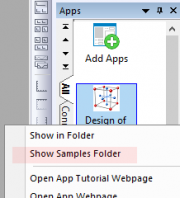
- 開いたフォルダ内のプロジェクトファイルをOriginにドラッグアンドドロップして開きます。
サンプル1: 2水準因子計画
計画を作成
- アプリケーションギャラリーの実験計画法（Design of Experiments）アイコン
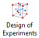
をクリックします。
- 計画を作成ボタンをクリックして、因子計画（Factorial Design）を選択します。
-
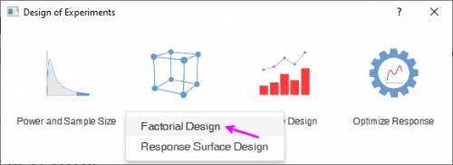
- 2 水準因子計画 (2-Level Factorial) と デフォルト生成器 (Default Generators) が選択されていることを確認します。因子タブで、因子の数を3に設定します。因子名としてTemp、Dens、Reagentを入力し、因子タイプをそれぞれ、数値、数値、テキストとして設定します。低水準と高水準の値を設定します（Temp:50, 80; Dens:20, 30; Reagent: TypeA, TypeB）。
-
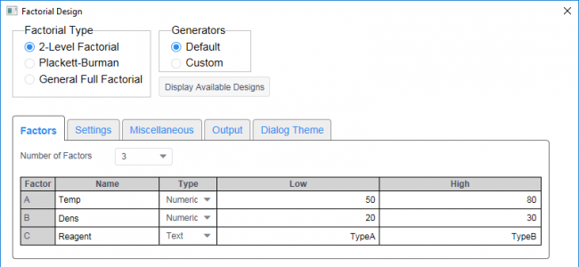
- 設定タブで、完全因子計画を選択します。反復数に2を入力します。ブロック数ドロップダウンリストから2を選択します。
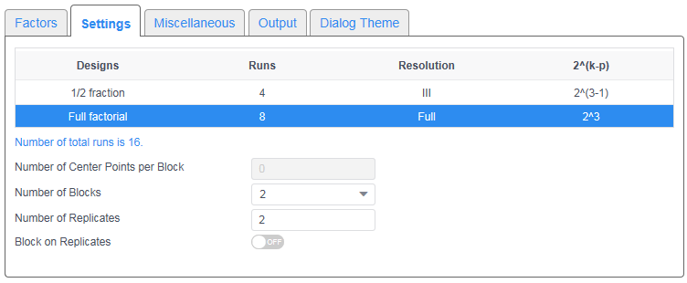
- その他タブで乱数シードテキストボックスに5を入力します。
- OK をクリックすると、実験計画表が出力されます。
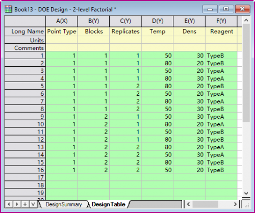
計画の分析
- 計画表に新しい列を追加し、応答データを入力します。ロングネームをpHにします。
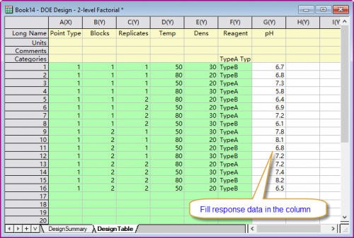
- 実験計画法（Design of Experiments）アイコンをクリックしてツールバーを開きます。計画の分析（Analyze Design）を選択します。
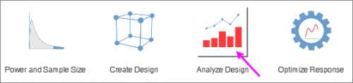
- モデルタブで、応答ドロップダウンリストからpHを選択します。次に、モデル次数から2を選択する。ブロックをモデルに含めるを選択します。
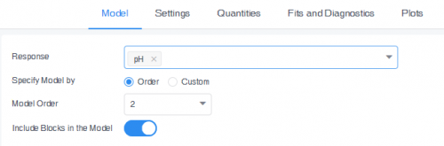
- 設定タブで、平均表ドロップダウンリストから主効果を選択します。
- 値タブで、係数テーブルドロップダウンリストから係数、標準誤差, 信頼区間、t値、p値を選択します。
- プロットタブでキューブプロット、等高線図、曲面図、2 因子交互作用プロットを選択します。キューブプロットの設定グループで、Temp、Dens、Reagentを3つの因子として選択します。等高線図と曲面図の設定グループで、X軸とY軸の係数として温度（Temp）と密度（Dens）を選択します。次に、試薬の値としてTypeAを選択します。
-
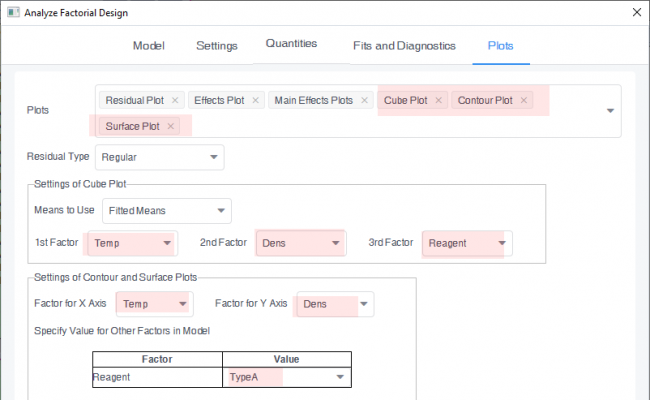
- OK をクリックして、分析結果を作成します。
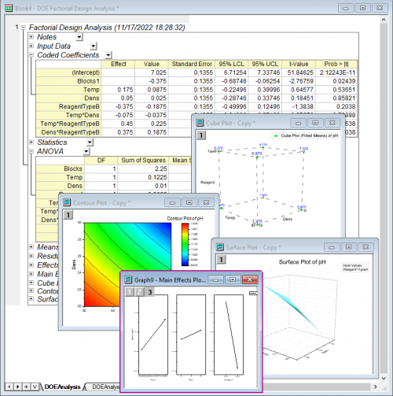
応答の最適化
- アプリケーションギャラリーの実験計画法（Design of Experiments）アイコンをクリックします。
- 前のセクションで取得した解析ワークブックをアクティブにして、応答の最適化ボタンをクリックします。
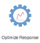
- ゴールタブで、pHのゴールとして最小化を選択します。下限と上限に5と9を入力します。
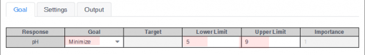
- 設定タブを開きます。因子: Reagentの行で、 制約に値で固定を選択し、固定値にTypeAを選択します。初期値を有効にします。TempとDensの行にそれぞれ60と25を入力します。
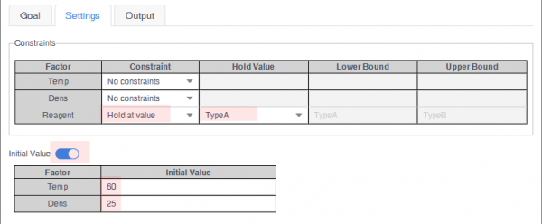
- OK をクリックして、最適化レポートを作成します。
-
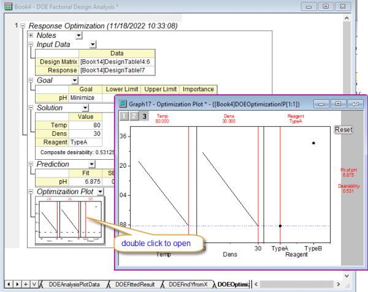
- 最適化プロットをダブルクリックして、グラフウィンドウを表示します。縦の赤い線を動かし、因子値を変更して応答（pH）や Composite Desirability（総合適合度）がどのように変化するかを確認します。リセットボタンをクリックすると、最適解に設定されます。
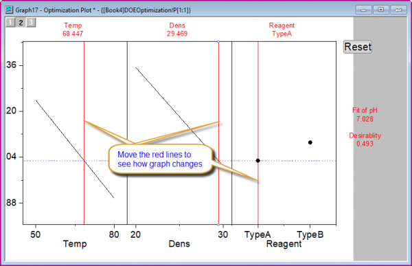
サンプル2: 中心複合計画
計画を作成
- アプリケーションギャラリーの実験計画法（Design of Experiments）アイコンをクリックします。
- 計画を作成ボタンをクリックして、応答曲面計画（Response Surface Design）を選択します。
-
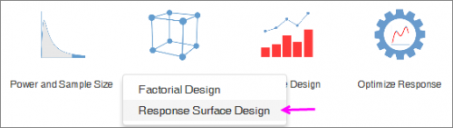
- 中心複合を選択します。因子タブで、連続因子の数ドロップダウンリストから3を選択します。係数名(Time、Temp、Catalyst)を入力します。低水準と高水準の値を設定します（それぞれ40-50、80-90、0.02-0.03）。カテゴリ因子の数ドロップダウンリストから1を選択します。因子名にReagentと入力します。次に、レベル値を入力(TypeA、TypeB)します。
-
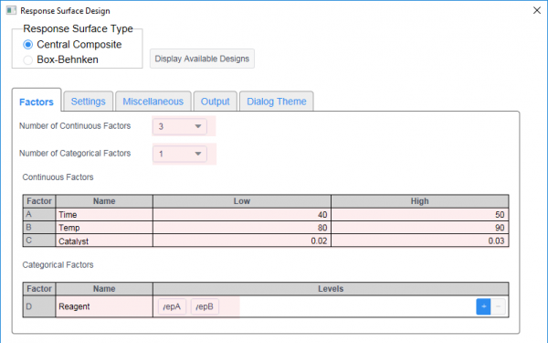
- 設定タブで、2番目の計画（ブロック= 2）を選択します。
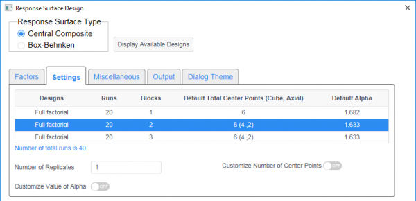
- その他タブで、計画をランダム化をオフにします。
- OK をクリックすると、実験計画表が出力されます。
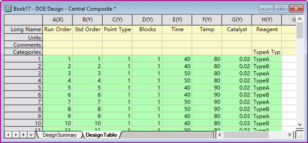
計画の分析
- 計画表に2つの新しい列を追加し、応答データを入力します。ロングネームにPHとConductivityを設定します。
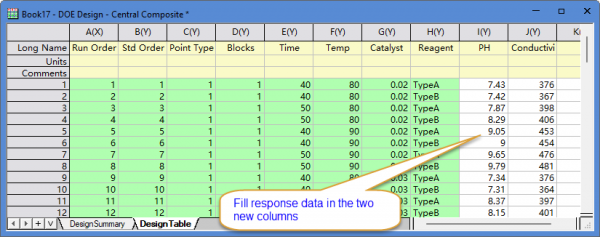
- アプリケーションギャラリーの実験計画法（Design of Experiments）アイコンをクリックします。
- 計画表をアクティブにし、計画の分析ボタンをクリックします。
- モデルタブで、応答にPHおよびConductivityを選択します。次に、モデルタイプドロップダウンリストから線形+二乗を選択します。ブロックをモデルに含めるを有効にします。
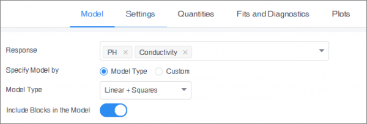
- 値タブで、係数テーブルドロップダウンリストから係数、標準誤差, 信頼区間、t値、p値を選択します。
- プロットタブを開いて、等高線図と曲面図を選択します。 等高線図と曲面図の設定グループで、X軸とY軸の係数として時間（Time）と温度（Temp）を選択します。Catalystの行の値に0.02を入力します。Reagentの行で、値の欄のTypeAを選択します。
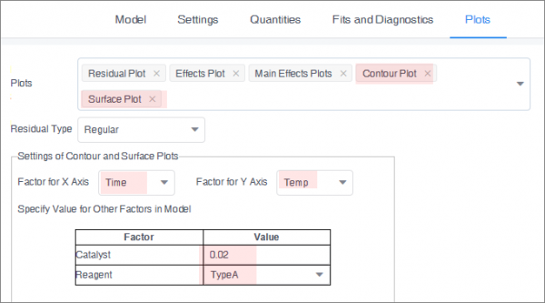
- OK をクリックして、分析結果を作成します。
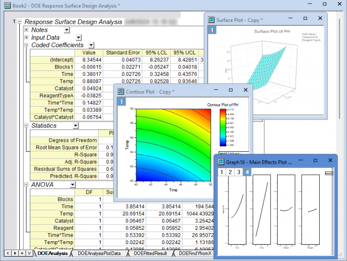
応答の最適化
- アプリケーションギャラリーの実験計画法（Design of Experiments）アイコンをクリックします。
- 前のセクションで取得した解析ワークブックをアクティブにして、応答の最適化ボタンをクリックします。
- ゴールタブで、PHの場合、ゴールとして最大化を選択し、下限に5、上限に9を設定します。 Conductivityは、最小化をゴールにします。下限は350、上限は550に設定します。
-
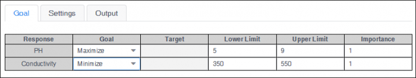
- 設定タブで、制約として制約付き領域を選択します。下限および上限として85および90を入力します。
-
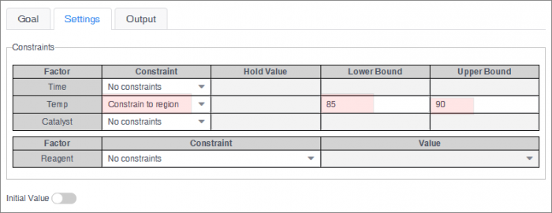
- OK をクリックして、最適化レポートを作成します。
-
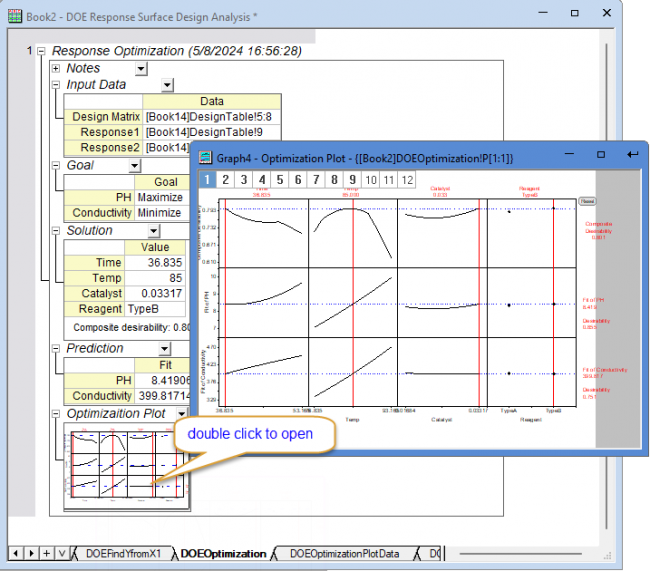
- 最適化プロットをダブルクリックして、グラフウィンドウを表示します。縦の赤い線を動かし、因子値を変更して応答（pH）や Composite Desirability（総合適合度）がどのように変化するかを確認します。リセットボタンをクリックすると、最適解に設定されます。
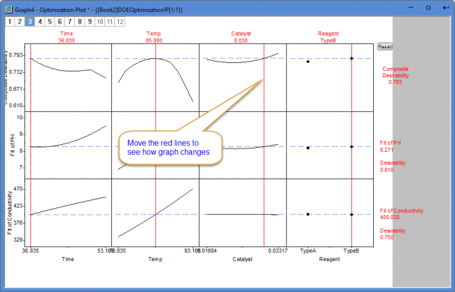
サンプル3: 検出力とサンプルサイズ
- アプリケーションギャラリーの実験計画法（Design of Experiments）アイコンをクリックします。
- 検出力とサンプルサイズボタンをクリックします。
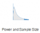
- 2 水準因子計画 (2-Level Factorial) を選択します。計画タブで、因子の数ドロップダウンリストから3を選択します。分数計画ドロップダウンリストから完全因子計画を選択します。ブロック数に2を選択します。モデルから省略する項の数に0を入力します。ブロックをモデルに含めるを有効にします。
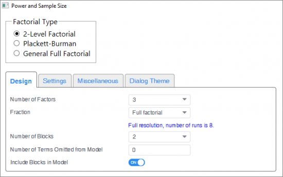
- 設定タブで、計算に検出力を選択する。プラスボタンをクリックして反復数に1レベルを追加し、各レベルに1と2を入力します。効果に0.4を入力します。ブロックごとの中心点数に0を入力します。標準偏差に0.2を入力します。OKをクリックします。
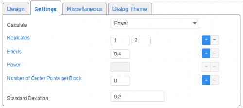
- 結果レポートに反復数 2 の場合、検出力が 0.92679 であることが表示 される。
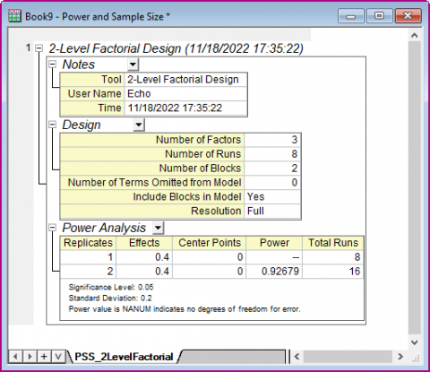
アプリのインストール
- Rソフトウェア(3.4.1以降)をインストールしていることを確認します。
- アプリケーションギャラリーの実験計画法（Design of Experiments）アイコンをクリックします。
- 必要なパッケージは自動的にダウンロードされます。失敗すると、結果ログに次のメッセージがポップアップ表示されます。
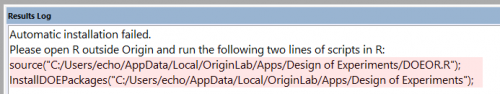
- Rを開き、結果ログの最後の2行をコピーして Rに貼り付け、Enterキーを押して実行します。
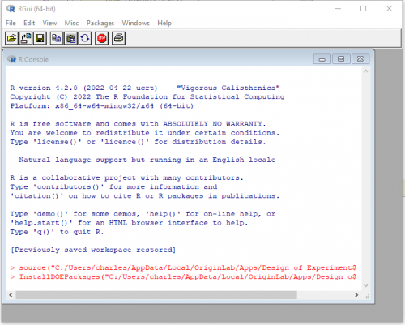
- ダイアログが表示されるので、ミラーサイトを選択すると、必要なパッケージが R で自動ダウンロードされます。
- パッケージが正常にインストールされ、エラーメッセージが出なければ Origin を再起動します。